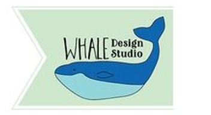

Logo Project: Whale Design Studio

This webpage was created to showcase the logo I created for Whale Design Studios.
It includes, but is not limited to, the process of creating the logo, rationale for
color choices, appeal to target audience, and design skills.
Here are some of my thoughts about creating this logo design:
-
I created this logo in Adobe Illustrator. I primarily used the pen tool
and the direct selection tool to modify points. I also used the rectangle
shape tool.
-
I chose to use an analogous color scheme for this logo. I chose the colors
blue, teal, and green. These colors remind me of water and fit well with
the whale icon.
-
I feel this logo appeals to the target audience for several reasons. The
name of the business, Whale Design Studio, has a quirky sort of feel.
-
The banner shape behind the whale icon is aesthetically pleasing and a
little different from other design logos that I have seen.
-
This logo incorporates tasteful typography, asymmetry, and color theory
while remaining visually balanced.
Visit my blog to see more about this logo:
Business Identity Project